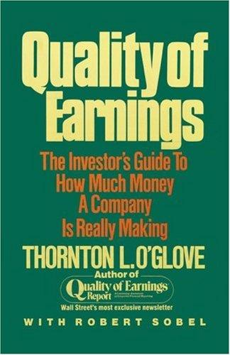

桑顿·奥格洛夫（Thornton L. O'Glove）是华尔街法务会计分析的先驱。他在1970年代创办了《盈利质量报告》（Quality of Earnings Report），这份独立研究通讯专门为机构投资者剖析上市公司财务报表中的会计操纵和盈利虚增问题，在专业投资圈内拥有极高声誉。1987年，奥格洛夫与商业史学家罗伯特·索贝尔（Robert Sobel）合作，将多年来积累的分析框架系统化，由Free Press（Simon & Schuster旗下）出版了这部《Quality of Earnings》。
本书的核心主张是：投资者不能仅凭公司公布的每股收益（EPS）数字做出买卖决策，而必须深入年报和财务报表的字里行间，判断这些盈利数字的真实质量。奥格洛夫将分析方法分解为几个关键维度：现金流分析——判断报告利润是否有真实现金支撑；应收账款——增速远超营收增速往往意味着公司在"填塞渠道"或放松信用标准；存货——异常膨胀可能暗示产品滞销或管理层为粉饰利润而推迟确认成本；债务结构——表外负债和复杂的融资安排常常是盈利质量恶化的先兆。书中通过大量真实案例，演示了如何在公司业绩崩塌之前就从财务细节中识别出危险信号。
这本书在出版近四十年后仍被视为法务会计和盈利质量分析领域的奠基之作。知名财经记者赫布·格林伯格（Herb Greenberg）称其为"法务会计的圣经"（the bible of forensic accounting）。对冲基金经理比尔·阿克曼（Bill Ackman）将本书列入投资者必读书目。尽管书中使用的案例来自1970至1980年代，但奥格洛夫所揭示的会计操纵手法——提前确认收入、资本化经营费用、利用准备金平滑利润——在数十年后的安然、世通等重大会计丑闻中几乎原样重演，证明了本书分析框架的持久生命力。
对于价值投资者和基本面分析者而言，《Quality of Earnings》的意义不仅在于提供了一套识别会计操纵的工具箱，更在于培养一种根本性的怀疑态度：任何一个财务数字，在被独立验证之前，都不应被当作事实接受。这种思维方式与本杰明·格雷厄姆（Benjamin Graham）强调的"安全边际"理念一脉相承——真正的投资安全，始于对财务报表的深度质疑。本书目前尚无中文译本，但对于具备基础英文阅读能力的投资者，它是理解美国资本市场财务分析传统的一部不可替代的经典。